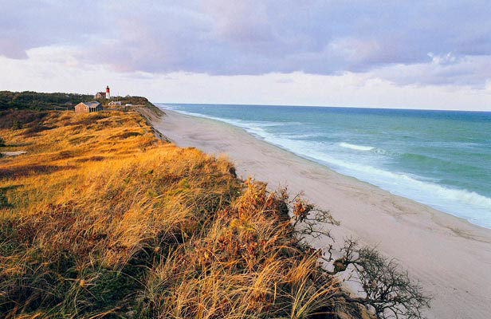

Cape Cod
With an expansive 40 miles of National Seashore, Cape Cod is one of New England's premier beach destinations. But there's more to do here than sun and sand: Thriving summer theater scenes draw out the best of Broadway while miles-long bike trails and well-protected wildlife showcases the one-of-a-kind Cape Cod environs. And don't forget to visit lively Provincetown where a lesser-known chapter of the Thanksgiving Pilgrim story waits to be uncovered.

Palm Springs
Palm Springs used to be all about the bling.
Once Hollywood’s favourite playground with the likes of Frank Sinatra, Elvis and Marilyn Monroe popping in regularly to party, it’s now dusted off the faded glamour to emerge in the bright Californian sunshine as a hip indie hangout for Coachella refugees, a magnet for architecture fans, an escape for nature lovers and a laid-back gay destination.
Despite its many personalities, it’s a relaxed and quirky desert town with heaps of playful charm.
So many beautiful houses So many beautiful houses It’s got architecture Not only was it a mecca for Hollywood stars but celebrities of the architecture world also created some stunning buildings in Palm Springs including Donald Wexler, E. Stewart Williams and John Lautner. Taking inspiration from the Bauhaus movement, they followed modernist principles coming up with sleek designs that work with the natural landscape around it. No ugly office blocks here. Even the local KFC has its own offbeat personality.
You can take a tour with a knowledgeable guide to sigh over Leonardo DiCaprio’s latest holiday home purchase, marvel at Liberace’s home and check out the house where Elvis and his new bride Priscilla spent their first year of marriage.
It’s got natureA short drive out of Palm Springs is Indian Canyons, a gorgeous reservation. There’s a whole range of walks you can do but the best way to take in the stunning views of the desert is by horseback.

Aspen
If there's one thing Aspen's known for, it's skiing. This tiny mountain town is surrounded by four monumental ski areas: Aspen Mountain, Aspen Highlands, Buttermilk (a favorite among beginners) and the ever-popular Snowmass Ski Resort. The luster isn't lost when the snow melts, however. The Rockies offer some spectacular hiking spots like the Maroon Bell peaks, with jaw dropping vistas. If you're looking for a more relaxing getaway, treat yourself to a massage at an area spa or try a therapeutic soak in the Glenwood Springs natural hot springs.
Las Vegas
There are a lot of reasons to visit Las Vegas, but let’s take a look at our Top 5:
- World Class Restaurants – Whether you are looking to pig out at a buffet, eat delicate meals at a fancy French restaurant or bite into an amazing cut of beef, Las Vegas has plenty of options up and down the strip (and off). Some of the worlds most renowned chefs have attached their names and reputations to the ultra-competitive market that is Las Vegas. Not sure where to go? Ask your concierge, ask the locals and read reviews on Yelp.com and other review sites or even ask your cab/limo driver! There are plenty of options for all different budgets so don’t be afraid to try something new!
- ,Shows and Concerts – Las Vegas has come a long way since the Rat Pack used to grace the stage at the Sands and other venues, drawing crowds to their smoky show room to listen to the legendary performers. While you can still catch a number of headliner shows in town, production shows now dominate the Las Vegas strip. Seems like every where you turn there is a new Cirque du Soleil show popping up, each with its own unique theme and super talented cast. Looking for something a little more risque? We have you covered! From the girls of Fantasy to the guys of Thunder From Down Under, there is something for everyone.
- Museums and Galleries – When thinking of Las Vegas, it’s doubtful that museums and galleries would come to mind, however there are quite a few impressive and unique offerings around town. Some of the unique offerings include the Mob Museum, National Atomic Testing Museum, Pinball Hall of Fame, Bodies Exhibit, Titanic: The Artifact Exhibition and the Madame Tussauds Wax Museum. There are also quite a few art galleries and auto collections as well.
- Attractions – Need a break from the Strip? Want something fun to do during the day? Las Vegas has a number of attractions that will have you forgetting that you are in the home of the multi-million dollar casinos. If you have always dreamed of being behind the wheel of a super car going at top speeds, handling heavy machinery or firing rounds out of a machine gun, you can fulfill them while right here in Las Vegas. The Hoover Dam and Grand Canyon are within driving distance and there are several trails in the mountains around the Valley as well.
- Las Vegas Nightclubs – More and more people are coming to Vegas to party each year and with the incredible Vegas clubs, who can blame them? Clubs like XS, Omnia, Hakkasan and more are bringing in some of the top DJ’s in the world to spin the latest and greatest in music. Some of the top nightclubs in the world are right here in Las Vegas!